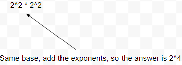
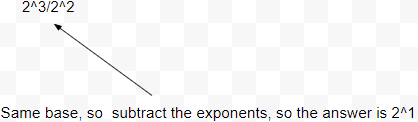
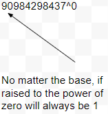

Exponent laws are used for simplifying certain expressions that have exponents, there are laws that simplify multiplication, division, as well as expressions with negative exponents, and multiple exponents, or expressions with the exponent as zero.
The law of multiplication is used when performing multiplication with expressions that have same bases, and an exponent. The law states that when multiplying expressions with exponents, add the exponents, if the bases are the same, which results in an expression with the same base, but an exponent as the result of the addition of the exponents.
The law of division is used when performing divison with expressions that have same bases, and an exponent. The law states that when dividing expressions with exponents, subtract the exponents, if the bases are the same, which results in an expression with the same base, but an exponent as the result of the subtraction of the exponents.
The power to power law is used when an expression has the base raised by exponents multiple times. The law states that when a base is has multiple exponents, the result will be an expression with the same base, but the exponent will be the result of the multiplication of the exponents.

The negative exponent law is used with expressions that have negative exponents. The law states that when the exponents in an expression are negative, evaluate the expression as if the exponent was positive, and set that as the denominator, with the numerator as one.
The law of division is used when performing divison with expressions that have zero as the exponent. The law states that if an expression has the exponent as zero, it will always result in zero regardless of the base.
